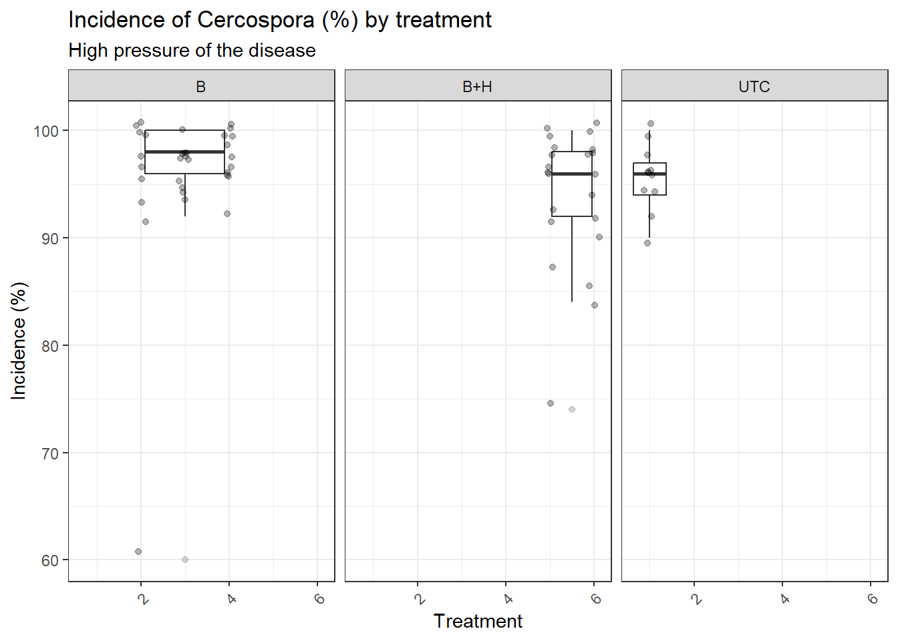
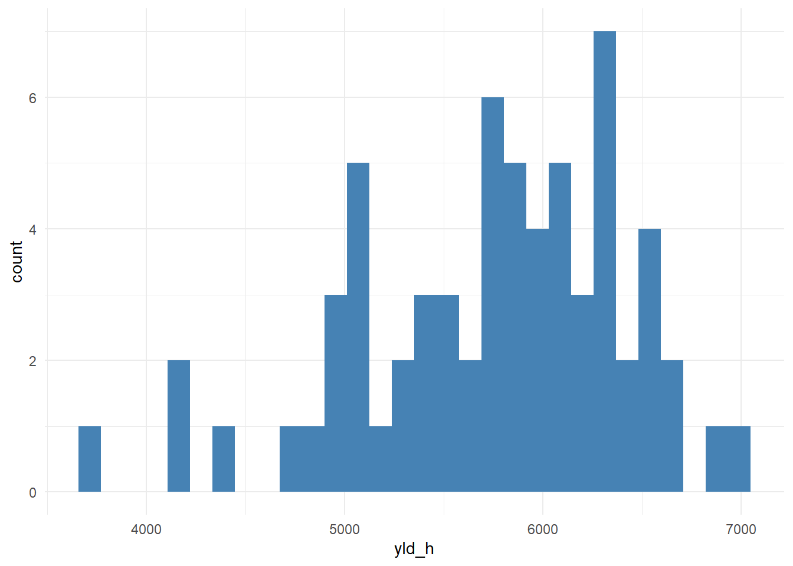
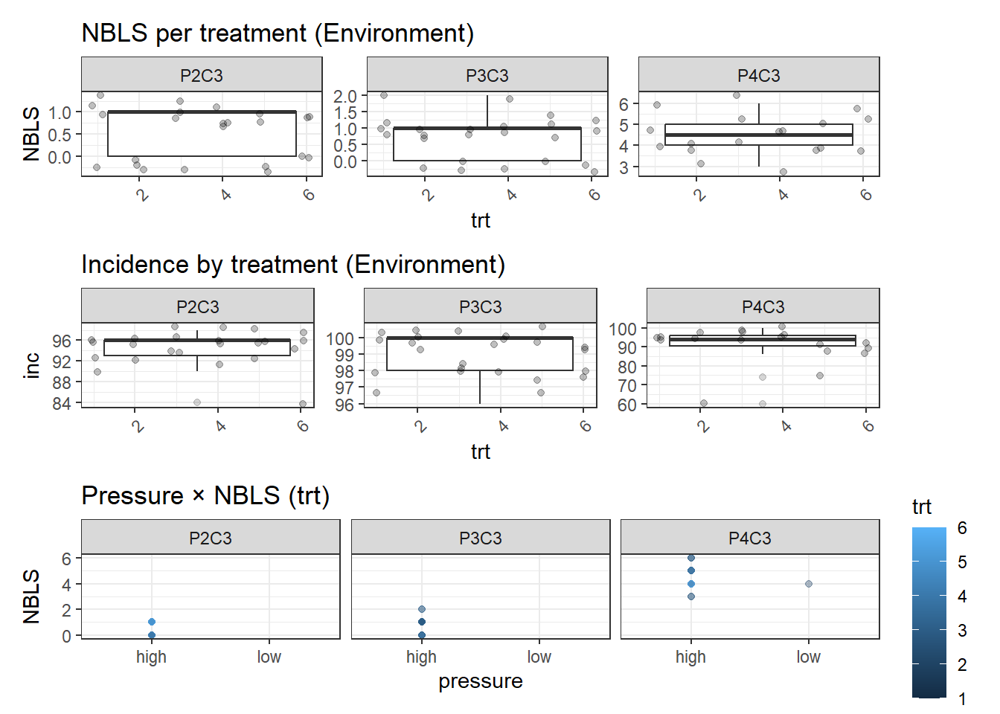
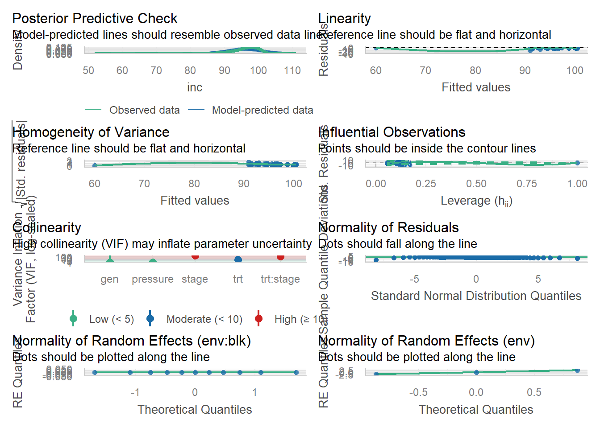
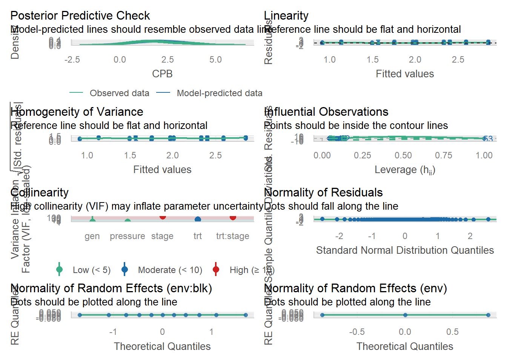

library(tidyverse)
library(lme4)
library(emmeans)
library(ggplot2)
library(car)
library(performance)
library(patchwork)
library(sjPlot)
library(flextable)
library(multcomp)
library(multcompView)
conflicted::conflict_prefer("select", "dplyr")
conflicted::conflict_prefer("filter", "dplyr")Analysis Cercospora Proth
some description …
Data and packages
Packages
Data
PROTH_desc
PROTH_data <- readxl::read_xlsx("Data/Cercospora_PROTH_measure.xlsx","PROTH")
PROTH_desc <- readxl::read_xlsx("Data/Cercospora_PROTH_description.xlsx", "PROTH")PROTH_data_disease <- PROTH_data
PROTH_data_yield <- PROTH_desc
n_lesion_plot <- PROTH_data_disease %>%
filter(lesion_n > 0) %>%
group_by(year, trial_ID, plot) %>%
summarise(
CPB = mean(CPB, na.rm = TRUE),
n_lesion = n(),
.groups = "drop",
inc = (n_lesion * 100)/50)
PROTH_yield_data <- PROTH_data_yield %>%
mutate(
yld = weight_12/(80/43560),
kg_ha = yld*1.2085) %>%
dplyr::select(year, trial_ID, trial, env, field, plot, blk, trt,
gen, fung, stage, rate, total, head, yld, kg_ha, NBLS)
CERC_PROTH_data <- right_join(PROTH_yield_data, n_lesion_plot,
by = c("year","trial_ID","plot")) %>%
filter(!field %in% c("WIN")) %>%
mutate(
pressure = ifelse(inc > median(inc), "high", "low"))
CERC_PROTH_data# A tibble: 65 × 21
year trial_ID trial env field plot blk trt gen fung stage rate
<dbl> <chr> <chr> <chr> <chr> <dbl> <dbl> <dbl> <chr> <chr> <chr> <chr>
1 2024 24-CER_PRO… CER_… P2C3 RRS2 101 1 5 PVL03 proth B+H 1x
2 2024 24-CER_PRO… CER_… P2C3 RRS2 102 2 4 PVL03 proth B 4x
3 2024 24-CER_PRO… CER_… P2C3 RRS2 103 3 3 PVL03 proth B 2x
4 2024 24-CER_PRO… CER_… P2C3 RRS2 104 4 1 PVL03 UTC UTC UTC
5 2024 24-CER_PRO… CER_… P2C3 RRS2 201 1 3 PVL03 proth B 2x
6 2024 24-CER_PRO… CER_… P2C3 RRS2 202 2 1 PVL03 UTC UTC UTC
7 2024 24-CER_PRO… CER_… P2C3 RRS2 203 3 2 PVL03 proth B 1x
8 2024 24-CER_PRO… CER_… P2C3 RRS2 204 4 3 PVL03 proth B 2x
9 2024 24-CER_PRO… CER_… P2C3 RRS2 301 1 4 PVL03 proth B 4x
10 2024 24-CER_PRO… CER_… P2C3 RRS2 302 2 2 PVL03 proth B 1x
# ℹ 55 more rows
# ℹ 9 more variables: total <chr>, head <chr>, yld <dbl>, kg_ha <dbl>,
# NBLS <chr>, CPB <dbl>, n_lesion <int>, inc <dbl>, pressure <chr>Analysis
Descriptive
# Produtividade
ggplot(CERC_PROTH_data, aes(x = rate, y = kg_ha, color = trt)) +
geom_boxplot() +
geom_point(size=2) +
geom_smooth(method = "lm", se = FALSE) +
theme_bw() +
facet_wrap(~env)
# Produtividade X Rate (BLK)
ggplot(CERC_PROTH_data, aes(x = rate, y = kg_ha, color = trt)) +
geom_boxplot() +
geom_point(size=2) +
geom_smooth(method = "lm", se = FALSE) +
theme_bw() +
facet_wrap(~blk)
# Relação entre CPB e produtividade
ggplot(CERC_PROTH_data, aes(x = CPB, y = kg_ha, group = stage, color = stage)) +
geom_point() +
geom_smooth(method = "lm", se = FALSE) +
theme_minimal()
# Relação entre NBLS e produtividade
ggplot(CERC_PROTH_data, aes(NBLS, kg_ha, group = stage, color = stage)) +
geom_point() +
geom_smooth(method = "lm", se = FALSE) +
theme_minimal()
ggplot(CERC_PROTH_data, aes(x= pressure, kg_ha, group = pressure)) +
geom_boxplot()
Fitting
mix_yld <- lmer(kg_ha ~ 1 + ( 1 | blk), data=CERC_PROTH_data, REML=F)
mix_yld1 <- lmer(kg_ha ~ pressure + (pressure | blk), data=CERC_PROTH_data, REML=F)
mix_yld2 <- lmer(kg_ha ~ pressure + (1 | pressure), data=CERC_PROTH_data, REML=F)
mix_yld3 <- lmer(kg_ha ~ pressure + (1 | blk), data=CERC_PROTH_data, REML=F)
mix_yld4 <- lmer(kg_ha ~ pressure + (1 | trt/blk), data=CERC_PROTH_data, REML=F)
mix_yld5 <- lmer(kg_ha ~ pressure * rate * (1 | trt/blk), data=CERC_PROTH_data, REML=F)
mix_yld6 <- lmer(kg_ha ~ pressure * rate * (1 | pressure/blk), data=CERC_PROTH_data, REML=F)
mix_yld7 <- lmer(kg_ha ~ rate * (1 | trt/blk), data=CERC_PROTH_data, REML=F)
AIC(mix_yld, mix_yld1, mix_yld2, mix_yld3, mix_yld4, mix_yld5, mix_yld6, mix_yld7) df AIC
mix_yld 3 1038.289
mix_yld1 6 1028.130
mix_yld2 4 1024.130
mix_yld3 4 1024.130
mix_yld4 5 1026.130
mix_yld5 11 1033.786
mix_yld6 11 1033.786
mix_yld7 7 1045.206BIC(mix_yld, mix_yld1, mix_yld2, mix_yld3, mix_yld4, mix_yld5, mix_yld6, mix_yld7) df BIC
mix_yld 3 1044.813
mix_yld1 6 1041.177
mix_yld2 4 1032.828
mix_yld3 4 1032.828
mix_yld4 5 1037.002
mix_yld5 11 1057.704
mix_yld6 11 1057.704
mix_yld7 7 1060.427anova(mix_yld5, mix_yld6)Data: CERC_PROTH_data
Models:
mix_yld5: kg_ha ~ pressure * rate * (1 | trt/blk)
mix_yld6: kg_ha ~ pressure * rate * (1 | pressure/blk)
npar AIC BIC logLik -2*log(L) Chisq Df Pr(>Chisq)
mix_yld5 11 1033.8 1057.7 -505.89 1011.8
mix_yld6 11 1033.8 1057.7 -505.89 1011.8 0 0 summary(mix_yld5)Linear mixed model fit by maximum likelihood ['lmerMod']
Formula: kg_ha ~ pressure * rate * (1 | trt/blk)
Data: CERC_PROTH_data
AIC BIC logLik -2*log(L) df.resid
1033.8 1057.7 -505.9 1011.8 54
Scaled residuals:
Min 1Q Median 3Q Max
-3.7668 -0.3921 0.0587 0.5157 1.9271
Random effects:
Groups Name Variance Std.Dev.
blk:trt (Intercept) 0 0.0
trt (Intercept) 0 0.0
Residual 337076 580.6
Number of obs: 65, groups: blk:trt, 24; trt, 6
Fixed effects:
Estimate Std. Error t value
(Intercept) 5276.93 193.53 27.267
pressurelow 642.09 256.01 2.508
rate2x 258.89 256.01 1.011
rate4x 332.34 305.99 1.086
rateUTC -279.77 387.05 -0.723
pressurelow:rate2x -83.06 356.85 -0.233
pressurelow:rate4x -159.60 434.90 -0.367
pressurelow:rateUTC 563.16 469.08 1.201
Correlation of Fixed Effects:
(Intr) prssrl rate2x rate4x ratUTC prss:2 prss:4
pressurelow -0.756
rate2x -0.756 0.571
rate4x -0.632 0.478 0.478
rateUTC -0.500 0.378 0.378 0.316
prssrlw:rt2 0.542 -0.717 -0.717 -0.343 -0.271
prssrlw:rt4 0.445 -0.589 -0.336 -0.704 -0.222 0.422
prssrlw:UTC 0.413 -0.546 -0.312 -0.261 -0.825 0.392 0.321
optimizer (nloptwrap) convergence code: 0 (OK)
boundary (singular) fit: see help('isSingular')summary(mix_yld6)Linear mixed model fit by maximum likelihood ['lmerMod']
Formula: kg_ha ~ pressure * rate * (1 | pressure/blk)
Data: CERC_PROTH_data
AIC BIC logLik -2*log(L) df.resid
1033.8 1057.7 -505.9 1011.8 54
Scaled residuals:
Min 1Q Median 3Q Max
-3.7668 -0.3921 0.0587 0.5157 1.9271
Random effects:
Groups Name Variance Std.Dev.
blk:pressure (Intercept) 0 0.0
pressure (Intercept) 0 0.0
Residual 337076 580.6
Number of obs: 65, groups: blk:pressure, 8; pressure, 2
Fixed effects:
Estimate Std. Error t value
(Intercept) 5276.93 193.53 27.267
pressurelow 642.09 256.01 2.508
rate2x 258.89 256.01 1.011
rate4x 332.34 305.99 1.086
rateUTC -279.77 387.05 -0.723
pressurelow:rate2x -83.06 356.85 -0.233
pressurelow:rate4x -159.60 434.90 -0.367
pressurelow:rateUTC 563.16 469.08 1.201
Correlation of Fixed Effects:
(Intr) prssrl rate2x rate4x ratUTC prss:2 prss:4
pressurelow -0.756
rate2x -0.756 0.571
rate4x -0.632 0.478 0.478
rateUTC -0.500 0.378 0.378 0.316
prssrlw:rt2 0.542 -0.717 -0.717 -0.343 -0.271
prssrlw:rt4 0.445 -0.589 -0.336 -0.704 -0.222 0.422
prssrlw:UTC 0.413 -0.546 -0.312 -0.261 -0.825 0.392 0.321
optimizer (nloptwrap) convergence code: 0 (OK)
boundary (singular) fit: see help('isSingular')summary(mix_yld7)Linear mixed model fit by maximum likelihood ['lmerMod']
Formula: kg_ha ~ rate * (1 | trt/blk)
Data: CERC_PROTH_data
AIC BIC logLik -2*log(L) df.resid
1045.2 1060.4 -515.6 1031.2 58
Scaled residuals:
Min 1Q Median 3Q Max
-2.8359 -0.5898 0.1982 0.6635 1.8036
Random effects:
Groups Name Variance Std.Dev.
blk:trt (Intercept) 0 0.0
trt (Intercept) 0 0.0
Residual 454447 674.1
Number of obs: 65, groups: blk:trt, 24; trt, 6
Fixed effects:
Estimate Std. Error t value
(Intercept) 5643.8 147.1 38.366
rate2x 146.1 205.7 0.710
rate4x 184.7 250.9 0.736
rateUTC 229.9 250.9 0.916
Correlation of Fixed Effects:
(Intr) rate2x rate4x
rate2x -0.715
rate4x -0.586 0.419
rateUTC -0.586 0.419 0.344
optimizer (nloptwrap) convergence code: 0 (OK)
boundary (singular) fit: see help('isSingular')YLD_emm_kg <- emmeans(mix_yld5, ~ rate * pressure)
print(cld(YLD_emm_kg, alpha = 0.05, Letters = letters)) rate pressure emmean SE df lower.CL upper.CL .group
UTC high 4997 362 25.09 4251 5743 a
1x high 5277 211 12.93 4821 5733 a
2x high 5536 185 7.40 5103 5968 a
4x high 5609 255 7.77 5017 6201 a
1x low 5919 184 7.40 5489 6349 a
4x low 6092 284 11.00 5468 6716 a
2x low 6095 203 10.19 5643 6547 a
UTC low 6202 220 4.45 5616 6788 a
Degrees-of-freedom method: kenward-roger
Confidence level used: 0.95
P value adjustment: tukey method for comparing a family of 8 estimates
significance level used: alpha = 0.05
NOTE: If two or more means share the same grouping symbol,
then we cannot show them to be different.
But we also did not show them to be the same.